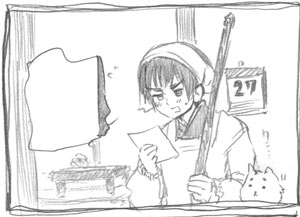
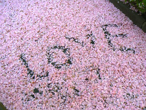
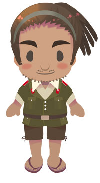
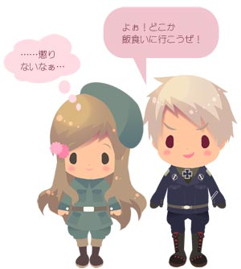
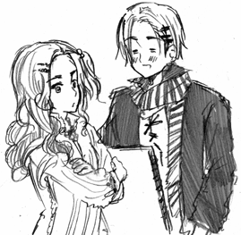
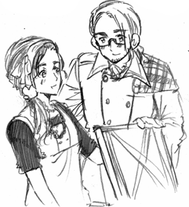

|
【ニュース】
ガチガチに凍り付いてしまっているロシアに輸出されている
日本車の写真（GIGAZINEさん）
もう車なのかマンボウなのか分かりませんね。
そういえばロシアに限ったことじゃないんですけど
古いけどまだ使える日本車なんかを輸入して
再利用するのって結構普通みたいですね。
ギリシャでは日本産オート三輪が現役で頑張ってるらしく
高度成長期をささえたオート三輪がまだどこかで
動いてるかと思うと不思議な感じですね。

「アメリカ人が春大好きなわけ」
The本没シリーズUPしました！
ちょいお返事
〉OPERAで見ると真ん中寄りになってないようです。
報告ありがとうございました。本当ありがたいです。
さっそく全面的に直してみました！
変な所がありましたら、いつでもお知らせください。
〉きたこーピュアが見たいのですが…
きたこーページに移動させて見やすくしようと思っています。
きたこーは漫画が多いのでどうまとめようか悩み中。
讃岐さんのエピソードなど気に入ってるものも多いので
近日中に終わらせたいですね。
〉日丸屋とはどう読むのでしょうか？
ひまるやです。先輩から受け継いだので意味は不明。
受け継いでなかったら今頃「もつなべ」さんだった…。
〉インデックスに戻れないのが惜しいですね。
しまった！！次の更新でどっかにつけたしておこうと思います。
〉前のブログはなくなってしまったのでしょうか？
今のブログの下の方にリンクを張っておいたので
いつでも見られますよ。
〉しもじろーや昔の漫画がみたいのですが見当たりません…。
上の「マンガ」から行けるページにまとめておきました。
下の■がいっぱいの所も、じわじわとタイトル付けて
見やすくしていってます。
あと改装でよくなったっていう感想いただけて
やったかいがあったってもんです！
ヘタリアページも見やすくしたいな。
■とびこせ！アメリカ人■
クリックするとでかくなります↑
今日花の写真を撮りに行ってきました。
ふと足元を見たら…

アメリカ人はなかなか洒落たことをします。
■アメリカ人の地図■
アメリカからみた世界
これだけアバウト、カオスながらもイギリスと
日本だけしっかりしてるのがかわいいです。
情報ありがとうございました！
■アルバニア人と森の仲間たち■
バルヨナページ作ってる時に描いた落書き恵やん。
今バルヨナ前夜祭がちょっと時間によって
見えるときと見えない時があるようです。
その場合、時間をかえれば大丈夫です。
■一仕事■
きたこー、バルヨナページ改装も終わり
（きたこーは今キャラ絵描いてます）
のこすはこのページとヘタリアですね。
このページはもうちょっと更新情報など
見やすくしようかなと思ってます。
あとバルヨナページの感想や誤字脱字報告
ありがとうございました。
アメリカにはパンクな場所がいっぱいあるので
今度いっぱい撮りに行きたいです。
あとイタリアいっぱい描きたい。
むさぼり描きたい。
■終わったよ母ちゃん■
バルヨナページやっと新しくできました。
現在ちょっと重くなっていますが
すぐに落ち着くと思います。
各キャラクターページはキャラクリックすると
前のキャラクターセレクトページに戻る
仕様になっています。
よかった！終わった！
■今日の喜び■

バルヨナキャラ紹介ページの下絵で
一番うまく描けたなっちゃん。
このTOPページなんかもいつの間にか
変わってたりするので変な所があったら
いつでも気軽にお知らせください。
■進行状況■

全キャラ制覇ー！！
キャラ紹介はこのキャラ絵とクリックすると
全身が見られる感じにしようかなと思ってます。
英・地下鉄は出会いの場（エキサイトニュース）
NY地下鉄はボーイミーツねずみの場。
■俺フランク■

あともうちょっとで終わって改装ができるぞー。
ヘタリアはレトロな雰囲気に
バルヨナはパンキッシュな感じになると思います。
そういえば教えていただいたすごいニュース
ドイツ少年ＮＡＳＡの間違い指摘
すごいぞ１３歳。
リヒテンシュタイン漫画感想ありがとうございました。
スイスの過保護っぷりは一度描いておきたいと
思っていたので描けてよかった！
■イケメンは罪■
カナダ「地味なくらいが一番ですって！」
イケメンに何か切ない思い出でもあるんだろうか。
情報ありがとうございました！
〉ひまさんー！質問させてくださいー！
ヘタリア全キャラ制覇どのキャラまで
描いたんですか？全部で何種類？
はーい今書き終わったのは２７国。
全部で３２国描こうかと思ってるので
キャラ紹介ページが一気に増えそうです。
■改装したら上にバーつけようと思うんだ■
〉もちもち絵はどうやって描いているんですか？
こんな感じでテンプレートに線を描いて
その線に沿って色をつけていく感じです。
キャラごとに顔の部品や体の大きさ変えたりして
やると結構はまります。
もうちょっとでヘタリア全キャラ制覇

出来上がりはこんな感じ。
スコットランドやウェールズ、北アイルランドと
並べてみたい。ちなみに全員この眉毛。
セーシェル。女の子キャラは華やかでいいです。
エクストリームあほ毛。
■リヒテンUP■
リヒテンの話最後までアップしました。
誤字脱字修正しました。
■報われない■

プロイセンが飼ってたうさぎみたいになりました。
ちなみにそのうさは実家でのんびり暮らしてます。
■眼鏡の重要さ■
眼鏡は重要ですね。
■お姉さんと一緒■
「僕小さく見える…」
■日本の店大健闘■
イギリスで日系の店が２００８年
最も素晴らしいティーハウスに選ばれる
これはすごい。
イタリア人の男、電車内で女性を
見つめ過ぎたとして有罪
やらなイタ。可愛いよイタリア人。
情報ありがとうございました。
■イギリスコイン■
イギリス新通貨が無駄にかっこいい件
（POLAR
BEAR BLOGさん）
紋章や鎧デザインはやっぱイギリスがカッコいい
イギリス人とんでもないものを忘れもの（エキサイト）
見つかるといいですね。
イギリス人は忘れものが多いらしい
80歳の米国人男性が徒歩で世界旅行、
18年間で66カ国（エキサイト）
なんというバイタリティおじいちゃん。
これは見習いたい。
■あの世からのメール■
妻があの世からメール送ってくる・英
ハイテク化の波があの世にまで
情報ありがとうございました！
モーターショーのキャンギャルやコンパニオンが
女でなくちゃいけない理由（らばＱさん）
すごく納得した。
情報ありがとうございました!
■エグゼクティブ三月革命■


なんだこの切ない革命。
【１８４８年革命】
ヨーロッパ中を巻き込んだ革命の嵐。
【三月革命】
ウィーンでも一応あったが、フランスがやってるし
今生活苦しいし、じゃあ革命すっかって感じで
始まった切ない三月革命。
【ゾフィー】
上のメッテルニヒぶん投げてるオーストリア大公妃。
ゾフィー・フリーデリケ・ドロテア・ヴィルヘルミーネ・
フォン・バイエルンさん。
この革命が起こったおかげで国民の総意という大義名分の元
宮廷ででかい顔してた浪費家メッテルニヒを
追い出すことに成功した。
歴史的ないじわる姑としても有名ですが
実際は彼女も色々大変だったようです。
【メッテルニヒ】
クレメンス・ヴェンツェル・ロタール・ネーポムク・
フォン・メッテルニヒさん。
外交の天才で色男のオーストリアの宰相（ドイツ人）。
メッテルニヒさんは浪費家でしたが
（ナポレオン妹を元気づけるために別荘プレゼントなど）
とても頭がよく外交面でも才能を発揮していたので
彼を追い出した後のオーストリアは誰が何をしていいのか
みんな良く分からず上も下もカオスな状態になりました。
人一人いなくなっただけで、皆おろおろする
オーストリア、すごい国です。
オーストリア国内はこんな感じでしたが
イタリアとはクストッツァで雨の中
死闘を繰り広げることになります。

■NYオサレピープル■
ご質問お答えします。
>NYはおしゃれなイメージがあるのですが、
実際はどうですか？
はい。かなりおしゃれです。

イタリア人と

フランス人はとてもおしゃれさんです。
けどニューヨークは結構服に関しては
すっごくラフな感じ。アメリカ人はみんな
暖かい：Tシャツ
普通：チェックのシャツ
寒い：パーカー
もっと寒い：ダッフルコート
っていうローテーションで服を着ています。
結構気楽に過ごせます。
ローマ爺ちゃんUPしました！
■バルヨナボンバーズ■
バルヨナボンバーズのロゴができました！
不良高校が舞台なのでちょっと
パンキッシュな感じでまとめてみました。
誤字ってますがつこみのエピソードが
あるのでこのまんまでいきます。
■ありがとうございました！■
エイプリルフールページ誤字脱字修正。
終わった後もメッセージで感想や
こういうニュースあったらいいな！なんていう
面白いネタとか読んでると嬉しくなります。
それにしても世界遺産って意外と
色んなもの申請するだけ申請できるんだなー。
それと質問があったのでお答えします。
ブログのNYの写真はゲームやサイトなど
自由に使ってOKです。
今日はたくさん写真撮りました！
■エイプリルフールまとめページ■
エイプリルフール終了しました。
お付き合いいただきありがとうございました。
 |
{kind=link}